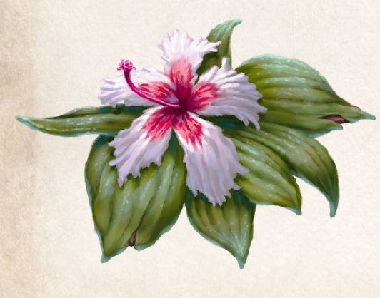

Chonchinis wächst überall im mittleren Aventurien, von Garetien bis zu den Echsensümpfen, bevorzugt aber in Steppenlagen oder an Waldrändern. Es ist eine niedrig wachsende Pflanze mit grünen ledrigen Blättern, die beinahe auf dem Boden aufliegen und häufig regelrecht verschrumpelt aussehen. Aus der Mitte des Krauts sprießt von Rahja bis Praios eine hübsche rotweiße bis rosafarbene Blüte, die bei Verliebten sehr beliebt ist, darüber hinaus aber keine besondere Wirkung aufweist. Dagegen haben Chonchinis-Blätter die erstaunliche Fähigkeit, Feuchtigkeit zu speichern und - einmal angeschnitten - als Saft wieder abzugeben. Just dieser Saft ist es, der die Pflanze zum begehrten Heilkraut macht, denn er wirkt lindernd sowohl bei Brand- als auch bei Ätzwunden. Gerade Alchimisten, Schmiede, Glasmacher und andere Berufe, die viel mit Feuer zu tun haben, schätzen Chonchinis und die daraus hergestellte, mit Wirselkraut versetzte und mit Fett angedickte Brandsalbe ungemein. Sie wird in ganz Aventurien in Tiegeln gehandelt, die neben dem Zeichen Peraines auch das des Elements Feuer tragen.
Zur Behandlung von „Bränden“, die das Feuer der Sonne verursacht, haben Südländer die sogenannte Praiosmilch ersonnen. Dies ist eine Mischung aus Chonchinismilch, Wasser und Praiosblumenöl. Auf einen Praiosbrand aufgetragen lindert sie Schmerzen und beschleunigt die Heilung der Haut. Anders als von findigen und geldgierigen Händlern angepriesen, wirkt die Milch jedoch nicht vorbeugend - und ebenso wenig gegen die lodernden Flammen von Scheiterhaufen oder Drachenfeuer, wie manches Märchen glauben machen will.
Verbreitung:
Landschaftstyp: überall (außer in Ewigem Eis und in Wüsten)
Regionen: gewöhnlich in der Steppe und am Waldrand, vor allem Mittelaventurien zwischen Goldener Au- und Echsensümpfen, gelegentlich auch andernorts
Suchschwierigkeit: -2
Bestimmungsschwierigkeit: -1
Anwendungen: 1/1/2/2/3/3
Wirkung:
Roh:
Berührung: sofortige Regeneration von 1 LeP bei Brand- oder Ätzwunden (Definition: Folge von Zustand Brennend oder Feuerangriffen).
Mehrfachanwendung möglich, es lassen sich bis zu 6 LeP zurückgewinnen.
Erst ab dem Ende der nächsten Regenerationsphase kann wieder eine neue Heilwirkung von bis zu 6 LeP einsetzen.
Nur Schaden von den genannten Schadensquellen kann durch die Pflanze geheilt werden.
Einatmung: keine
Verzehr: keine
Verarbeitet: siehe Rezepte
Preis: 4 / 8 Silbertaler
Rezepte:
Pflanzliche Hilfsmittel: Brandsalbe, Praiosmilch
Volksbrauchtum: Badezusatz (Milch); Eine der häufigsten Verletzungen unter Kindern sind Verbrennungen, auch da Praiosmilch fälschlicherweise oft eine immunisierende Wirkung gegen Feuer zugeschrieben wird.
Haltbarkeit:
Roh: siehe Haltbarmachung